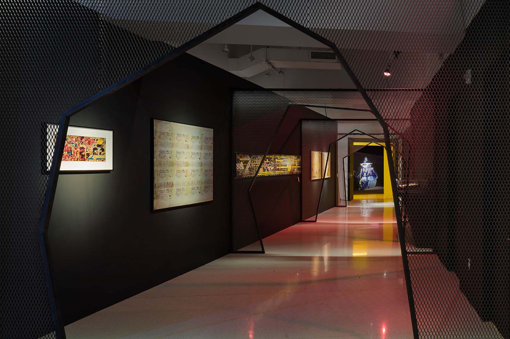
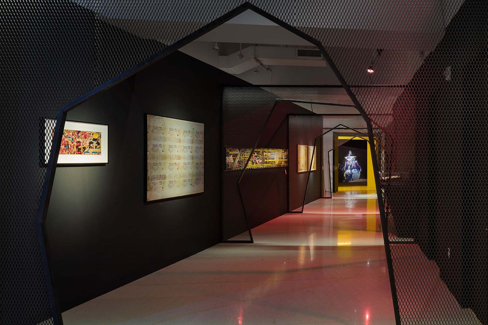
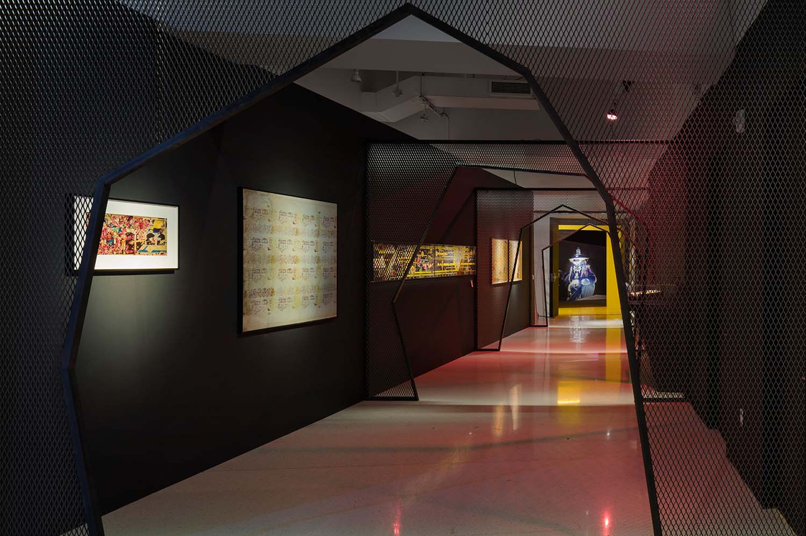

Throbbing_quivering_pulsing_beating
Center for Curatorial Studies, Bard College, Co-curator, 2019
Gretchen Bender: So Much Deathless
Red Bull Arts New York, Associate Curator & Head of Public Programs, 2019
Wake
No Longer Empty / Time Square Arts, Project Manager, 2018
Rammellzee: Racing for Thunder
Red Bull Arts New York, Associate Curator & Head of Public Programs, 2018
Clouds of Petals
Sarah Meyohas
Red Bull Arts New York, Exhibition & Program Coordinator, Managing Editor, 2017
Ugo Rondinone: I ♥︎ John Giorno
Red Bull Arts New York, Exhibition & Program Coordinator, Curator of Public Programs, 2017
The Casual Pleasure of Disappointment
Bjarne Melgaard
Red Bull Arts New York, Associate Curator & Managing Editor, 2017
Remix Rememory
No Longer Empty, Curatorial Fellow, 2016
TOTAL PROOF: The GALA Committee, 1995–1997
Red Bull Arts New York, Co-Curator, 2016
We All Love Your Life
George Henry Longly
Red Bull Arts New York, Exhibition & Programming Coordinator, 2016
BIO:DIP
Hayden Dunham / Nicolas Lobo
Red Bull Arts New York, Exhibition & Programming Coordinator, 2016
Scenario In The Shade
Justin Lowe, Jonah Freeman, Jennifer Herrema
Red Bull Arts New York, Exhibition & Programming Coordinator, 2015
Various Exhibitions
Tanya Leighton, Berlin, Gallery Administration, 2014–2015
Autotopia: Cars for a better future, curated by Herb Tam
Geometric Days, Curated by Papo Colo and Jeanette Ingberman with Herb Tam
Contemporary Slavery, Curated by Papo Colo and Jeanette Ingberman with Herb Tam
Exit Art, Curatorial Assistant, 2011



 
